Zeppelin对接FusionInsight HD¶
适用场景¶
Zeppelin 0.8.0 ↔ FusionInsight HD V100R002C80SPC200 (HBase/Hive/Spark/SparkR/ELK)
安装Zeppelin¶
操作场景¶
安装Zeppelin0.8.0
前提条件¶
- 已完成FusionInsight HD和客户端的安装。
操作步骤¶
- 安装Zeppelin 0.8.0,在网址
https://zeppelin.apache.org/download.html下载安装包，使用WinSCP导入主机并用tar -zxvf zeppelin-0.8.0-bin-all.tgz安装生成zeppelin-0.8.0-bin-all目录。

-
启动和停止Zeppelin
bin/zeppelin-daemon.sh start bin/zeppelin-daemon.sh stop

-
执行source命令到客户端，获取java配置信息
source /opt/hadoopclient/bigdata_env echo $JAVA_HOME

-
配置Zeppelin环境变量，在profile文件中加入如下变量
vi /etc/profile export ZEPPELIN_HOME = /usr/zeppelin/zeppelin-0.8.0-bin-all export PATH = $ZEPPELIN_HOME/bin:$PATH
-
编辑zeppelin-env.sh文件，位置
/usr/zeppelin/zeppelin-0.8.0-bin-all/confcd /usr/zeppelin/zeppelin-0.8.0-bin-all/conf/ cp zeppelin-env.sh.template zeppelin-env.sh vi zeppelin-env.sh
加入如下内容：
export JAVA_HOME=/opt/hadoopclient/JDK/jdk1.8.0_162
/usr/zeppelin/zeppelin-0.8.0-bin-all/conf
cp zeppelin-site.xml.template zeppelin-site.xml
将zeppelin-site.xml中端口8080替换成18081（可自定义，也可以不改）
sed -i 's/8080/18081/' zeppelin-site.xml

-
运行zeppelin
cd /usr/zeppelin/zeppelin-0.8.0-bin-all bin/zeppelin-daemon.sh start
-
在浏览器中输入地址zeppelin_ip:18081登陆，zeppelin_ip为安装zeppelin的虚拟机IP 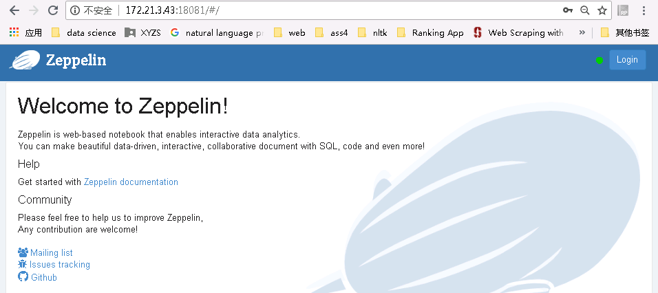
-
根据产品文档创建用户developuser，并赋予足够权限，下载用户developuser的keytab文件user.keytab，上传至
/usr/zeppelin/zeppelin-0.8.0-bin-all目录下 -
编辑zeppelin-site.xml文件，将zeppelin.anonymous.allowed参数的true修改为false

-
编辑shiro.ini文件，位置/usr/zeppelin/zeppelin-0.8.0-bin-all/conf/shiro.ini
[urls]authc表示对任何url访问都需要验证cp shiro.ini.template shiro.ini vi shiro.ini

[users]下增加用户developuser，密码Huawei@123，权限admin

- 重启zeppelin
cd /usr/zeppelin/zeppelin-0.8.0-bin-all bin/zeppelin-daemon.sh restart
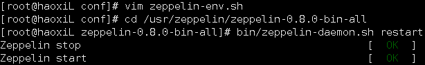
- 使用账户developuser登陆zeppelin

Zeppelin连接Hive¶
操作场景¶
Zeppelin中配置JDBC解析器，对接Hive的JDBC接口。
前提条件¶
-
已经完成Zeppelin 0.8.0的安装；
-
已完成FusionInsight HD和客户端的安装，包含Hive组件。
操作步骤¶
-
将
/opt/hadoopclient/Hive/Beeline/lib/下的jar包拷贝至/usr/zeppelin/zeppelin-0.8.0-bin-all/interpreter/jdbc/目录下。 -
将从新拷贝过来的jar包的属主和权限修改为和
/usr/zeppelin/zeppelin-0.8.0-bin-all/interpreter/jdbc/下原有的jar包相同chown 502:wheel *.jar chmod 644 *.jar
- 编辑zeppelin-env.sh文件，位置
/usr/zeppelin/zeppelin-0.8.0-bin-all/conf/，加入以下三个配置内容export JAVA_HOME=/opt/hadoopclient/JDK/jdk1.8.0_162 export ZEPPELIN_INTP_JAVA_OPTS="-Djava.security.krb5.conf=/opt/developuser/krb5.conf -Djava.security.auth.login.config=/usr/zeppelin/zeppelin-0.8.0-bin-all/conf/jaas.conf -Dzookeeper.server.principal=zookeeper/hadoop.hadoop.com -Dzookeeper.request.timeout=120000" export HADOOP_CONF_DIR=/opt/hadoopclient/HDFS/hadoop/etc/hadoop
-
从FusionInsight客户端下载用户developuser的user.keytab和krb5.conf文件，将krb5.conf文件放在
/opt/developuser/下 -
在
/usr/zeppelin/zeppelin-0.8.0-bin-all/conf/路径下新建hbase的认证文件jaas.conf，内容如下:Client { com.sun.security.auth.module.Krb5LoginModule required useKeyTab=true keyTab="/opt/developuser/user.keytab" principal="developuser" useTicketCache=false storeKey=true debug=true; };其中用户为在FusionInsight Manager中创建的developuser用户，将developuser的keytab文件user.key放在/opt/developuser/目录下
-
登陆Zeppelin，选择右上角菜单中的 Interpreter

-
选择JDBC，点击 edit 编辑，修改default.driver和default.url参数，点击 save 保存
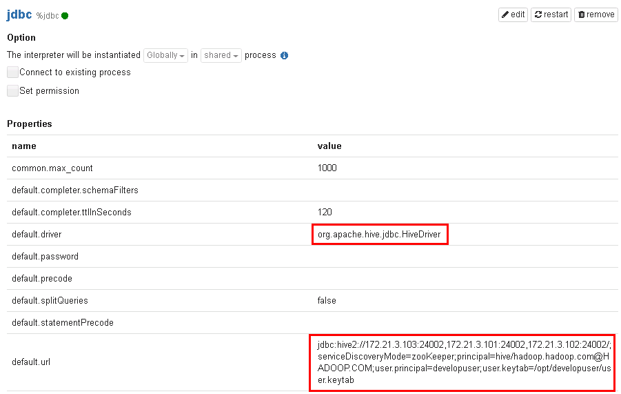default.driver：org.apache.hive.jdbc.HiveDriver default.url：jdbc:hive2://172.21.3.103:24002,172.21.3.101:24002,172.21.3.102:24002/;serviceDiscoveryMode=zooKeeper;principal=hive/hadoop.hadoop.com@HADOOP.COM;user.principal=developuser;user.keytab=/opt/developuser/user.keytab
-
重启zeppelin。
source /opt/hadoopclient/bigdata_env kinit –kt /opt/developuser/user.keytab developuser cd /usr/zeppelin/zeppelin-0.8.0-bin-all bin/zeppelin-daemon.sh restart
- 页面选择Notebook -> Create new note

- 自定义note名称，例如hive_test

-
编辑note，点击右侧“执行”按钮。
%jdbc Show tables;
%jdbc select * from t2
-
查看结果

Zeppelin连接HBase¶
操作场景¶
Zeppelin中配置Hbase解析器，对接Hbase
前提条件¶
-
已经完成Zeppelin 0.8.0的安装
-
已完成FusionInsight HD和客户端的安装，包含HBase组件
操作步骤¶
-
将
/usr/zeppelin/zeppelin-0.8.0-bin-all/interpreter/hbase/目录下旧的jar包移走cd /usr/zeppelin/zeppelin-0.8.0-bin-all/interpreter/hbase mkdir hbase_jar mv hbase*.jar hbase_jar mv hadoop*.jar hbase_jar mv zookeeper-3.4.6.jar hbase_jar
-
将
/opt/hadoopclient/HBase/hbase/lib/以下的jar包拷贝至/usr/zeppelin/zeppelin-0.8.0-bin-all/interpreter/hbase/目录下cp /opt/hadoopclient/HBase/hbase/lib/hbase-*.jar /usr/zeppelin/zeppelin-0.8.0-bin-all/interpreter/hbase cp /opt/hadoopclient/HBase/hbase/lib/hadoop-*.jar /usr/zeppelin/zeppelin-0.8.0-bin-all/interpreter/hbase cp /opt/hadoopclient/HBase/hbase/lib/zookeeper-*.jar /usr/zeppelin/zeppelin-0.8.0-bin-all/interpreter/hbase cp /opt/hadoopclient/HBase/hbase/lib/dynalogger-V100R002C30.jar /usr/zeppelin/zeppelin-0.8.0-bin-all/interpreter/hbase
-
编辑zeppelin-env.sh文件，位置/usr/zeppelin/zeppelin-0.8.0-bin-all/conf，加入以下三个配置内容
export JAVA_HOME=/opt/hadoopclient/JDK/jdk1.8.0_162 export ZEPPELIN_INTP_JAVA_OPTS="-Djava.security.krb5.conf=/opt/developuser/krb5.conf -Djava.security.auth.login.config=/usr/zeppelin/zeppelin-0.8.0-bin-all/conf/jaas.conf -Dzookeeper.server.principal=zookeeper/hadoop.hadoop.com -Dzookeeper.request.timeout=120000" export HBASE_HOME=/opt/hadoopclient/HBase/hbase
-
从FusionInsight客户端下载用户developuser的user.keytab和krb5.conf文件，将krb5.conf文件放在
/opt/developuser下 -
在
/usr/zeppelin/zeppelin-0.8.0-bin-all/conf/路径下新建hbase的认证文件jaas.conf，内容如下:Client { com.sun.security.auth.module.Krb5LoginModule required useKeyTab=true keyTab="/opt/developuser/user.keytab" principal="developuser" useTicketCache=false storeKey=true debug=true; };其中用户为在FusionInsight Manager中创建的developuser用户，将developuser的keytab文件user.key放在/opt/developuser/目录下
-
登陆Zeppelin，选择右上角菜单中的 Interpreter
- 选择hbase，点击 edit 编辑，修改hbase.home参数，点击 save 保存
hbase.home：/opt/hadoopclient/HBase/hbase

- 重启zeppelin。
source /opt/hadoopclient/bigdata_env kinit –kt /opt/developuser/user.keytab developuser cd /usr/zeppelin/zeppelin-0.8.0-bin-all bin/zeppelin-daemon.sh restart
- 页面选择Notebook -> Create new note
- 自定义note名称，例如hbase_test

-
编辑note，点击右侧“执行”按钮
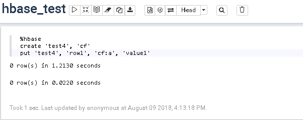%hbase create 'test4', 'cf' put 'test4', 'row1', 'cf:a', 'value1'
-
在FusionInsight的客户端下可以看到创建的hbase表test4和数据

Zeppelin连接Spark¶
操作场景¶
Zeppelin中配置Spark解析器
前提条件¶
- 完成Zeppelin0.8.0的安装；
- 已完成FusionInsight HD和客户端的安装，包含Spark2x组件。
- 参考http://zeppelin.apache.org/docs/latest/interpreter/spark.html
操作步骤¶
-
将
/opt/client/FusionInsight_Services_ClientConfig/Spark2x/FusionInsight-Spark2x-2.1.0.tar.gz/spark/jars路径下所有的jar包拷贝至/usr/zeppelin/zeppelin-0.8.0-bin-all/interpreter/spark -
将
/opt/client/FusionInsight_Services_ClientConfig/Spark2x/FusionInsight-Spark2x-2.1.0.tar.gz/spark/jars路径下libfb303-0.9.3.jar和libthrift-0.9.3.jar两个jar包拷贝至/usr/zeppelin/zeppelin-0.8.0-bin-all/interpreter/spark/dep路径下 -
确保
/usr/zeppelin/zeppelin-0.8.0-bin-all/lib/interpreter路径下有且仅有libthrift-0.9.3.jar这个版本的jar包 -
编辑zeppelin-env.sh文件，位置/opt/zeppelin-0.7.3/conf，加入以下内容
export MASTER=yarn-client export SPARK_HOME=/opt/hadoopclient/Spark2x/spark export HADOOP_CONF_DIR=/opt/hadoopclient/HDFS/hadoop/etc/hadoop
- 登陆Zeppelin，选择右上角菜单中的 Interpreter
- 选择Spark，点击 edit 编辑，将 master 参数改为 yarn-client，并且检查zeppelin.spark.useHiveContext项，使其值为false，点击 save 保存

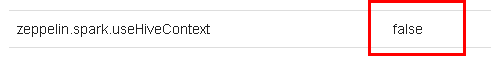
- 重启zeppelin。
source /opt/hadoopclient/bigdata_env kinit –kt /opt/developuser/user.keytab developuser cd /usr/zeppelin/zeppelin-0.8.0-bin-all bin/zeppelin-daemon.sh restart
- 执行zeppelin的spark样例代码，参考网址
https://www.zepl.com/viewer/notebooks/aHR0cHM6Ly9yYXcuZ2l0aHVidXNlcmNvbnRlbnQuY29tL2hvcnRvbndvcmtzLWdhbGxlcnkvemVwcGVsaW4tbm90ZWJvb2tzL21hc3Rlci8yQTk0TTVKMVovbm90ZS5qc29u/样例代码需要访问Internet上的资源，所以保证zeppelin所在的节点可以联网，检测是否能打开以下链接


- 执行zeppelin的spark样例代码Zeppelin Tutorial -> Matplotlib (Python • PySpark)
安装python-matplotlib
yum install python-matplotlib
安装Anaconda2-4.4
wget https://repo.continuum.io/archive/Anaconda2-4.4.0-Linux-x86_64.sh
sh Anaconda2-4.4.0-Linux-x86_64.sh
配置环境变量PATH，将python换成安装Anaconda安装目录中的python
export PATH=/root/anaconda2/bin/:$PATH
sh Anaconda2-4.4.0-Linux-x86_64.sh
在zeppelin的界面中，选择右上角的 Interpreter
选择Spark，点击 edit 编辑，将 zeppelin.pyspark.python 参数改为Anaconda安装目录中的python，点击 save 保存

执行zeppelin的pyspark样例代码Zeppelin Tutorial -> Matplotlib (Python • PySpark)

Zeppelin连接SparkR¶
操作场景¶
Zeppelin中配置Spark解析器，连接SparkR
前提条件¶
- 完成Zeppelin0.8.0的安装；
- 已完成FusionInsight HD和客户端的安装，包含Spark2x组件。
- 参考http://zeppelin.apache.org/docs/latest/interpreter/spark.html
操作步骤¶
- 由于Spark的Executor上也需要执行R，所以除了在Zeppelin的节点上安装R以外，所有FusionInsight集群节点上也要安装同版本的R，安装步骤如下：
不同OS配置yum源时下载的文件路径有所不同，下面以Redhat6.6安装R为例
- 配置Redhat6.6的yum源
cd ~ rpm -aq | grep yum | xargs rpm -e --nodeps wget http://mirrors.163.com/centos/6/os/x86_64/Packages/python-iniparse-0.3.1-2.1.el6.noarch.rpm wget http://mirrors.163.com/centos/6/os/x86_64/Packages/yum-metadata-parser-1.1.2-16.el6.x86_64.rpm wget http://mirrors.163.com/centos/6/os/x86_64/Packages/yum-3.2.29-81.el6.centos.noarch.rpm wget http://mirrors.163.com/centos/6/os/x86_64/Packages/yum-plugin-fastestmirror-1.1.30-40.el6.noarch.rpm wget http://mirrors.163.com/centos/6/os/x86_64/Packages/python-urlgrabber-3.9.1-11.el6.noarch.rpm rpm -ivh python-iniparse-0.3.1-2.1.el6.noarch.rpm rpm -ivh yum-metadata-parser-1.1.2-16.el6.x86_64.rpm rpm -U python-urlgrabber-3.9.1-11.el6.noarch.rpm rpm -ivh yum-3.2.29-81.el6.centos.noarch.rpm yum-plugin-fastestmirror-1.1.30-40.el6.noarch.rpm cd /etc/yum.repos.d/ wget http://mirrors.163.com/.help/CentOS6-Base-163.repo sed -i 's/$releasever/6/g' /etc/yum.repos.d/CentOS6-Base-163.repo yum clean all yum makecache
如果遇到源yum-plugin-fastestmirror无法下载时，可在网址
https://rpmfind.net/linux/rpm2html/search.php?query=yum-plugin-fastestmirror下选择相应的版本代替下载安装
- 配置EPEL的源
Redhat 6.x 使用下面命令安装
rpm -Uvh https://mirrors.tuna.tsinghua.edu.cn/epel//6/x86_64/epel-release-6-8.noarch.rpm
-
更新cache
yum clean all yum makecache
-
执行
yum install R安装R的相关的包 -
执行
R，检查R是否可用
正常启动如下图所示

- FusionInsight客户端下测试是否可以使用sparkR
source /opt/hadoopclient/bigdata_env kinit developuser sparkR

- 参考http://zeppelin.apache.org/docs/0.7.3/interpreter/r.html#using-the-r-interpreter 在R的命令行中安装sparkR样例需要的R的libraries
install.packages('devtools')
install.packages('knitr')
install.packages('ggplot2')
install.packages(c('devtools','mplot','googleVis'))
install.packages('data.table')
install.packages('sqldf')
install.packages('glmnet')
install.packages('pROC')
install.packages('caret')
install.packages('sqldf')
install.packages('wordcloud')

- 重启zeppelin。
source /opt/hadoopclient/bigdata_env kinit –kt /opt/developuser/user.keytab developuser cd /usr/zeppelin/zeppelin-0.8.0-bin-all bin/zeppelin-daemon.sh restart
- 在Zeppelin中执行Zeppelin Tutorial -> R (SparkR)样例


Zeppelin连接Apache Livy¶
操作场景¶
Zeppelin中配置Livy解析器，连接Livy
前提条件¶
- 完成Zeppelin0.8.0的安装；
- 已完成FusionInsight HD和客户端的安装，包含Spark2x组件。
- 完成Apache Livy 0.5.0的安装
可参考《Apache Livy对接FusionInsight》对接文档完成Apache Livy的安装
操作步骤¶
- 用如下命令启动Livy服务
cd /usr/livy/livy-0.5.0-incubating-bin bin/livy-server start

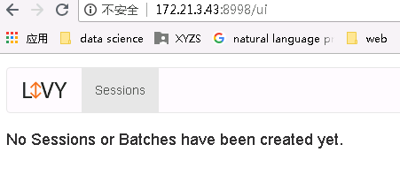
- 登陆Zeppelin，选择右上角菜单中的 Interpreter
-
选择livy，点击 edit 编辑zeppelin.livy.url的值为
http://172.21.3.43:8998（可以不更改），点击 save 保存
-
页面选择Notebook -> Create new note
- 自定义note名称，例如livy_connection_test
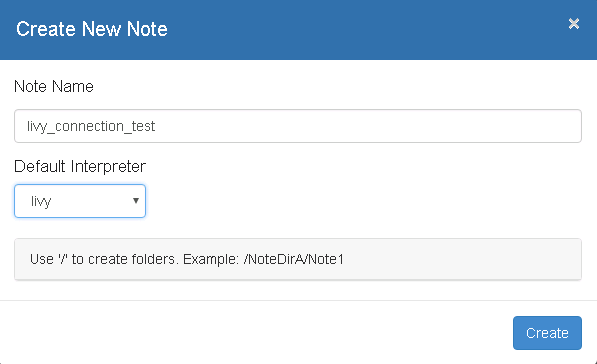
- 在Zeppelin中执行Spark样例代码
val NUM_SAMPLES = 100000; val count = sc.parallelize(1 to NUM_SAMPLES).map { i => val x = Math.random(); val y = Math.random(); if (x*x + y*y < 1) 1 else 0 }.reduce(_ + _); println("Pi is roughly " + 4.0 * count / NUM_SAMPLES)
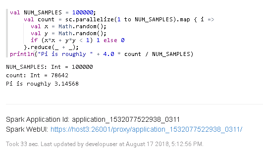
-
在Zeppelin中执行PySpark样例代码
%livy.pyspark import random NUM_SAMPLES = 100000 def sample(p): x, y = random.random(), random.random() return 1 if x*x + y*y < 1 else 0 count = sc.parallelize(xrange(0, NUM_SAMPLES)).map(sample).reduce(lambda a, b: a + b) print "Pi is roughly %f" % (4.0 * count / NUM_SAMPLES)

-
在Zeppelin中执行SparkR样例代码
%livy.sparkr hello <- function( name ) { sprintf( "Hello, %s", name ); } hello("livy")
Zeppelin连接FusionInsight Elk¶
操作场景¶
Zeppelin中配置JDBC解析器，连接FusionInsight Elk
前提条件¶
- 完成Zeppelin0.8.0的安装；
- 已完成FusionInsight HD和客户端的安装，包含Elk组件。
操作步骤¶
- 第一步： 后台登录FusionInsight Elk, 创建登录用户， 分配用户权限， 创建数据库， 测试数据表
-
以omm用户身份登录CN所在服务器（172.21.3.101 集群主节点），执行
source /opt/huawei/Bigdata/mppdb/.mppdbgs_profile命令启动环境变量 -
使用
gsql -d postgres -p 25108连接数据库
-
创建数据库用户**joe**, 密码为**Bigdata@123**
CREATE USER joe WITH PASSWORD "Bigdata@123";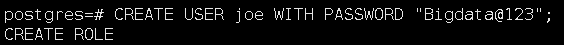
用下面这个命令将系统权限授权给用户或者角色
GRANT ALL PRIVILEGES TO joe; -
创建HDFS表空间。
CREATE TABLESPACE hdfs_tablespace LOCATION '/srv/BigData/hadoop/hdfs_tablespace' WITH (filesystem = 'HDFS', cfgpath = '/opt/huawei/Bigdata/mppdb/conf', storepath = '/user/elk/tablespace/ hdfs_tablespace');当结果显示为如下信息，则表示创建成功。
CREATE TABLESPACE

-
创建数据库。
CREATE DATABASE db_tpcds;当结果显示为如下信息，则表示创建成功。
CREATE DATABASE

创建完db_tpcds数据库后，就可以按如下方法退出postgres数据库，使用新用户连接到此数据库执行接下来的创建表等操作。当然，也可以选择继续在默认的postgres数据库 下做后续的体验。
\q gsql -d db_tpcds -p 25108 -U joe -W Bigdata@123

-
创建一个名称为“hdfs_001”的表。
CREATE TABLE hdfs_001(id int,name varchar2(20) ) WITH (orientation=orc,version=0.12,compression=no) TABLESPACE hdfs_tablespace; -
使用INSERT命令插入数据。
插入一行数据：
INSERT INTO hdfs_001 (id,name ) VALUES (1, 'Administration');插入多行数据：
INSERT INTO hdfs_001 (id,name ) VALUES (1, 'Administration'),(2, 'Marketing'), (2, 'Purchasing');
-
检查结果
Select * from hdfs_001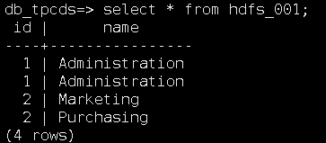
-
第二步： 配置集群Elk远程连接
-
以omm用户身份登录CN所在服务器（172.21.3.101 集群主节点），执行
source /opt/huawei/Bigdata/mppdb/.mppdbgs_profile命令启动环境变量 -
配置客户端认证方式，允许客户端以 joe 用户连接到本机，此处远程连接禁止使用 omm 用户。 例如，下面示例中配置允许IP地址为 172.16.52.190 的客户端访问集群本机。
gs_guc set -Z coordinator -N all -I all -h "host all joe 172.16.52.190/32 sha256"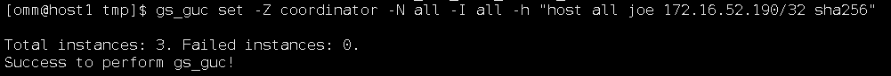
使用“joe”用户前，需先本地连接数据库，并在数据库中使用如下语句建立“joe”用户。 -Z coordinator表示实例类型为coordinator。 -N all表示集群的所有主机。 -I all表示主机的所有实例。 -h 表示指定需要在“pg_hba.conf”增加的语句。 all表示允许客户端连接到任意的数据库。 joe 表示连接数据库的用户。 172.16.52.190/32表示只允许IP地址为10.10.0.30的主机连接。在使用过程中，请根据用户的网络 进行配置修改。 sha256表示连接时jack用户的密码使用sha256算法加密。
-
配置listen_addresses
使用命令
gs_guc set -N all -I all -Z coordinator -c "listen_addresses = '*'"
-
执行如下命令重启集群。
gs_om -t stop && gs_om -t start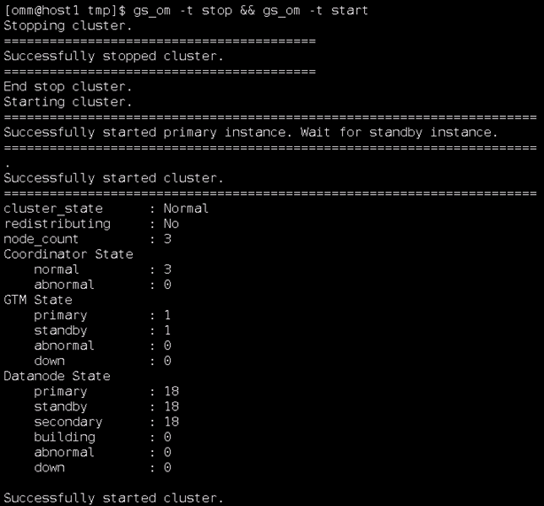
-
第三步： 配置zeppelin JDBC 接口对接 FusionInsight elk
-
在FusionInsight HD客户端中找到Elk的jdbc驱动：
驱动程序：Gauss200-OLAP-V100R007C10-REDHAT-64bit-Jdbc.tar.gz
驱动类：org.postgresql.Driver
具体位置为：C:\FusionInsightHD\FusionInsight_Services_ClientConfig\Elk
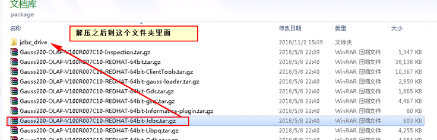
驱动jar包的名字叫 gsjdbc4.jar

-
将找到的这个 gsjdbc4.jar 驱动文件使用WinSCP工具拷贝到
/usr/zepplein/zeppelin-0.8.0-bin-all/interpreter/jdbc路径下， 并且使用 下面命令更改驱动权限。
chown 502:wheel gsjdbc4.jar chmod 755 gsjdbc4.jar

-
启动Zeppelin, 配置 JDBC interpreter如下:

1: default.driver = org.postgresql.Driver 2: default.password = Bigdata@123 3: default.url = jdbc:postgresql://172.21.3.101:25108/db_tpcds 4: default.user = joe
-
检查结果：